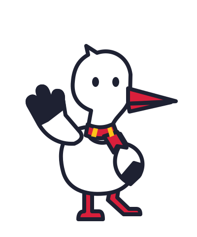
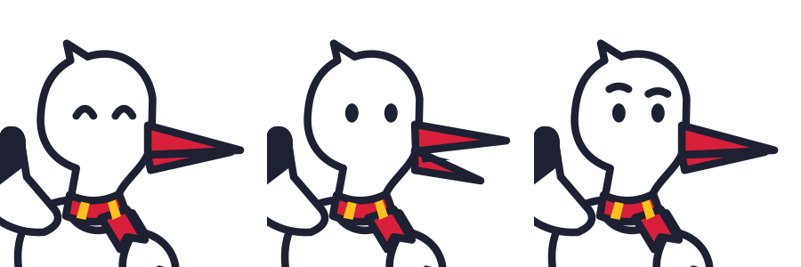

A. Bociek
BOH-chek · The white stork
A long-necked stork with ink wing tips, crimson beak and stepping legs. A tiny crimson-and-sun scarf gives the white silhouette a warm folk detail.
The strongest fit: recognisably a stork at small sizes, naturally in PolishPal’s palette, with an expressive beak for pronunciation.
The two beak halves hinge separately; wings rotate at the shoulders, the head tilts at the neck, and the long legs can fold into a hop.
Recommended direction
PolishPal

With the existing logo and live Fredoka wordmark
Three ways to respond

HappyTalkingOops · try again
White
Canvas #F6F7FA
Crimson #D91F3B
In a blog tip card
A little practice helps.
Try saying it slowly. You can take your time.
A note from Bociek